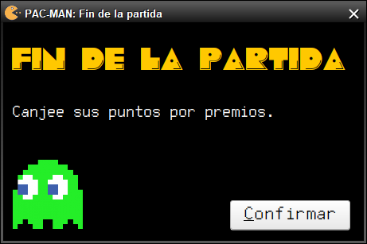

PAC-MAN
Fin de la partida
Si el jugador finaliza la partida y gana, tendrá la opción de elegir premios según los puntos que haya obtenido.
La partida puede finalizar por diversos motivos que se expresan a continuación:
- Se finaliza la ronda número 10 y el jugador gana si quedan huecos libres sobre el tablero de juego.
-
Finaliza la partida con la puntuación obtenida hasta ese momento.
- Se consigue eliminar una colonia de 5 o más fantasmas de tipo Cabecilla de golpe
-
Finaliza instantáneamente la partida sumándose 20000 puntos al jugador.
- El tablero de juego queda completamente vacío.
-
Finaliza la partida después de haber agrupado los últimos fantasmas en el tablero y el jugador gana la partida, ya que
ha conseguido evitar la invasión.
- Todas las casillas están ocupadas por fantasmas, y por tanto, el jugador pierde la partida por no haber podido evitar la invasión.
-
Finaliza la partida con 0 puntos, ya que el jugador ha perdido.
